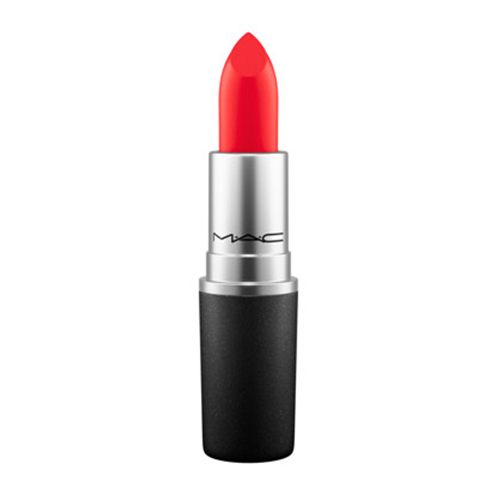

Секция 1
The Nars Velvet Matte Lip Pencils are great. With any matte lip product I make sure that I've been using Aquaphor before putting it on, but honestly these guys aren't as drying as others because they have vitamin E. I appreciate that their vibrant color doesn't wind up on my teeth, and the jumbo crayon size makes reapplying simple.
Секция 2
My little sister often scoffs at my expensive beauty products and, one day, introduced me to this $6 drugstore buy. I haven't looked back since. The applicator makes precision easy and the bright color requires no reapplication all day.
Секция 3
Now ubiquitous, shine-free lip color is more than Instagram makeup. Matte lipstick just makes sense. Unlike gloss or sheeny lipsticks, flat pigment stays put the longest–second only to lip stain–which means no mess on cups, clothes, or other people's faces. On the flip side, matte lipstick longevity means you'll want to find colors that you can live with all day. Here, ELLE.com editors weigh in on all things matte–from the perfect drugstore berry shade to the one Kylie Lip Kit color you need to try.